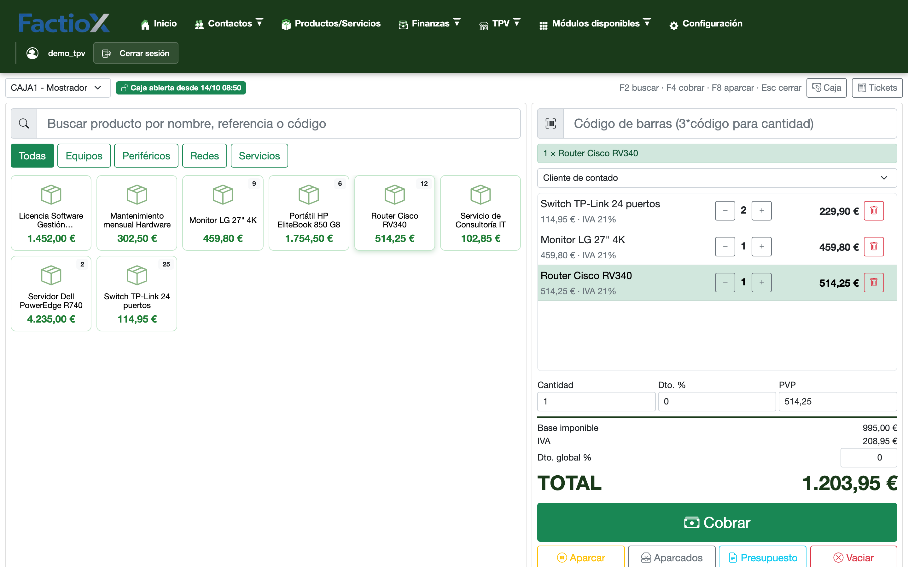
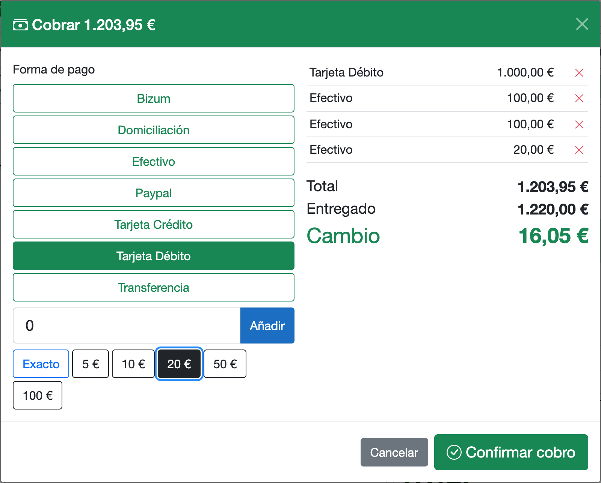
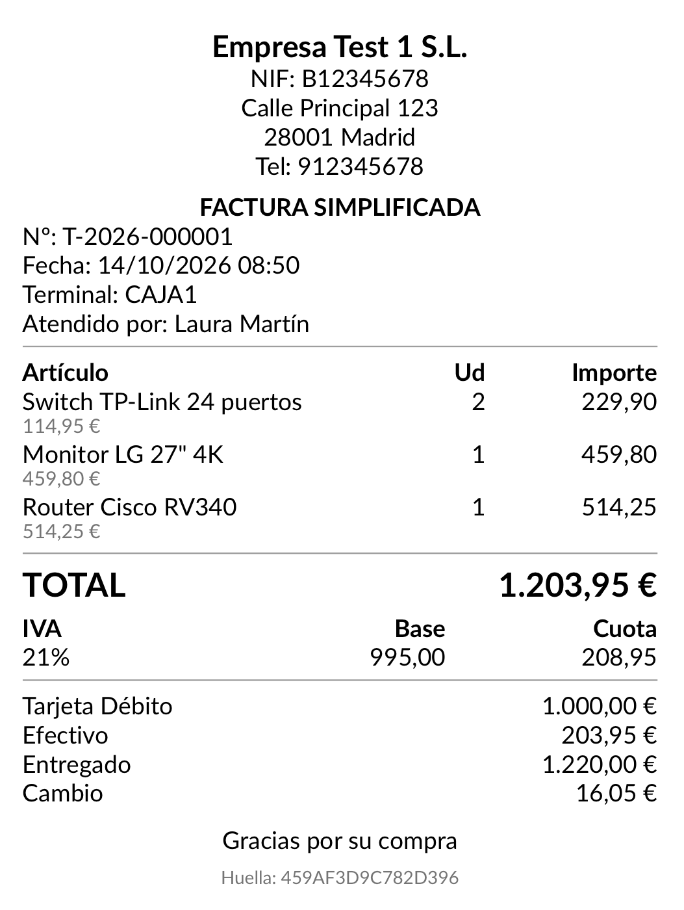
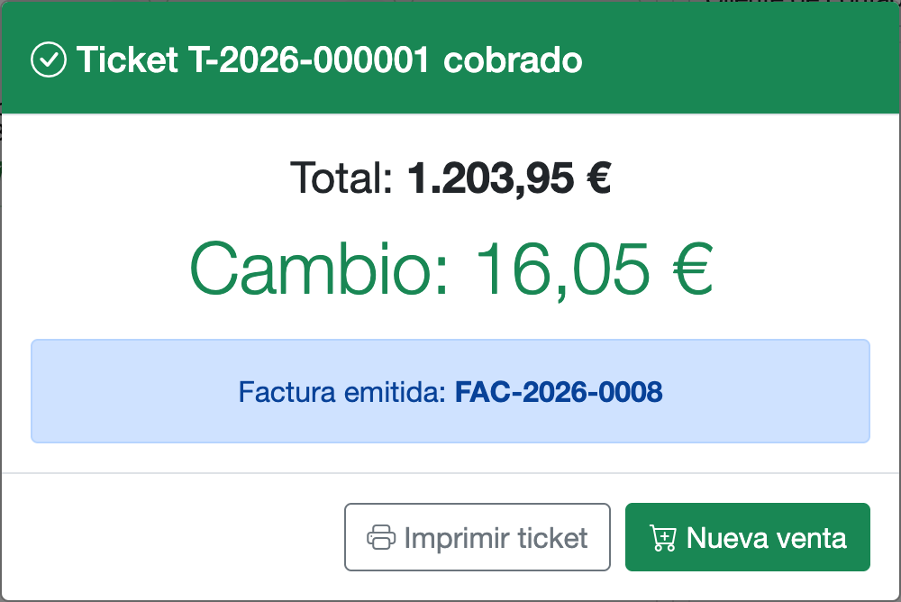
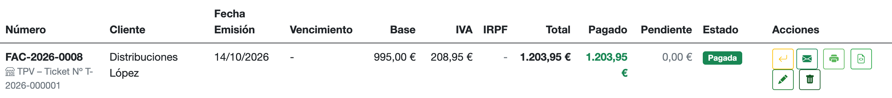
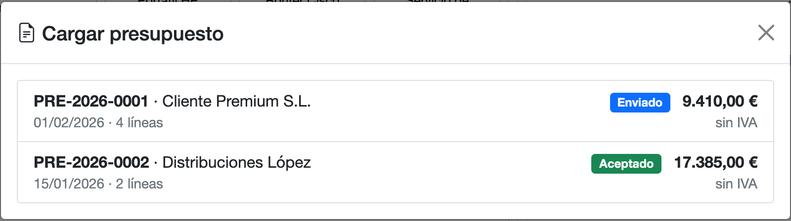
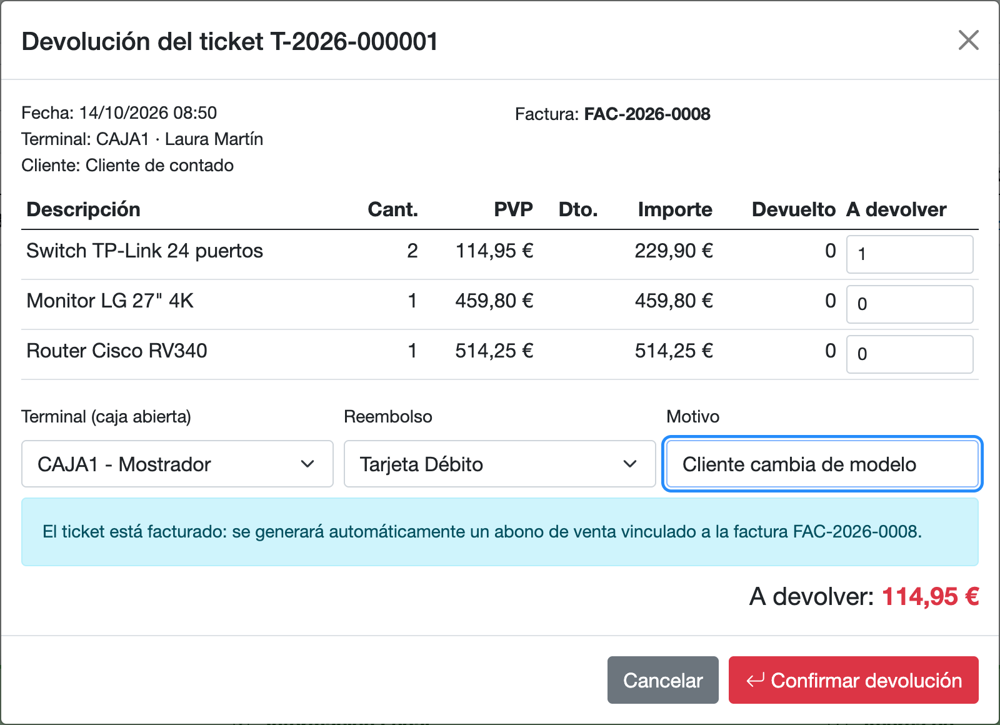
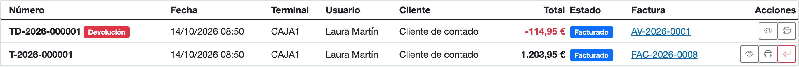
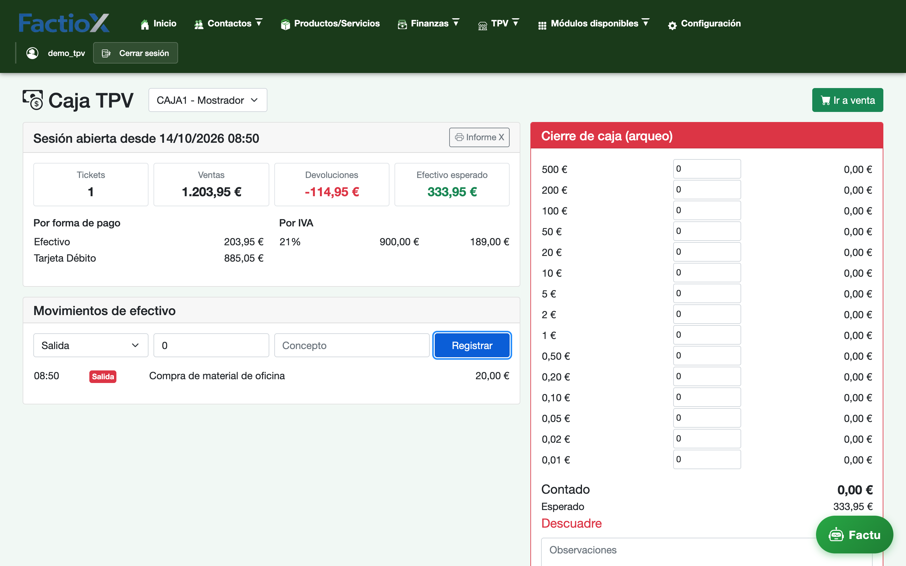
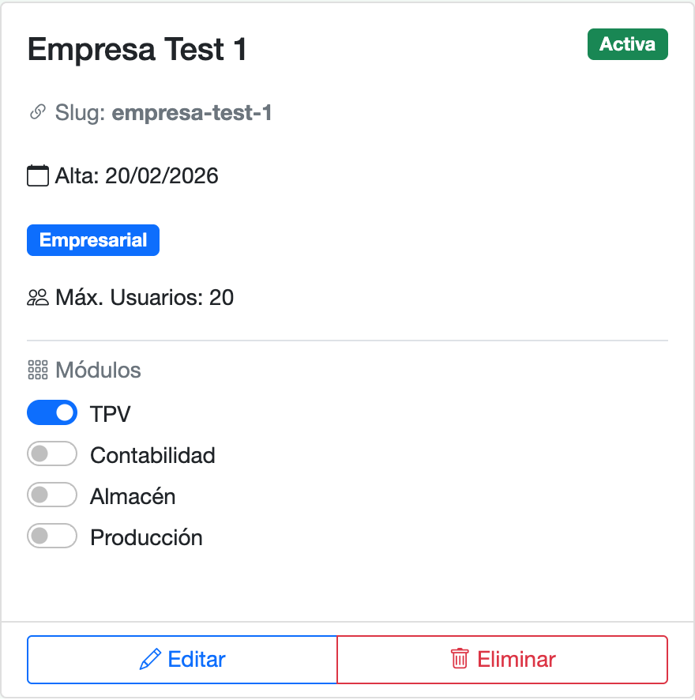

El punto de venta integrado en FactioX: los mismos productos, clientes, presupuestos y facturas que ya usas, ahora también en tu caja.

Una pantalla pensada para el mostrador: el vendedor escanea o toca el producto y el ticket se calcula solo.
Pago mixto (tarjeta + efectivo, Bizum…), botones rápidos de billetes y cálculo automático del cambio. El ticket se imprime en impresoras térmicas de 58 u 80 mm.


¿El cliente necesita factura? Se emite desde el propio TPV, ya marcada como pagada, y aparece en Facturas de venta con el ticket de origen. También se pueden agrupar varios tickets de un mismo cliente en una sola factura.


Los presupuestos aceptados se cargan en el TPV con un clic, sin volver a teclear líneas. Cada presupuesto solo puede cobrarse una vez.

Un ticket cobrado nunca se borra: se corrige con una devolución numerada que repone el stock. Si el ticket ya estaba facturado, FactioX genera automáticamente el abono vinculado a la factura.


Apertura con fondo inicial, entradas y salidas de efectivo, resumen por forma de pago y por tipo de IVA, arqueo por billetes y monedas e informe Z al cierre con el descuadre calculado.

